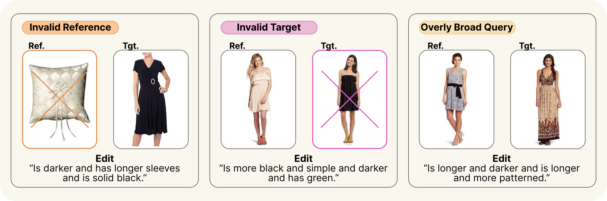
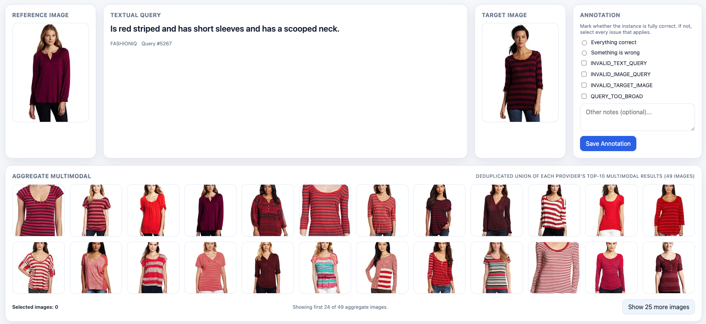
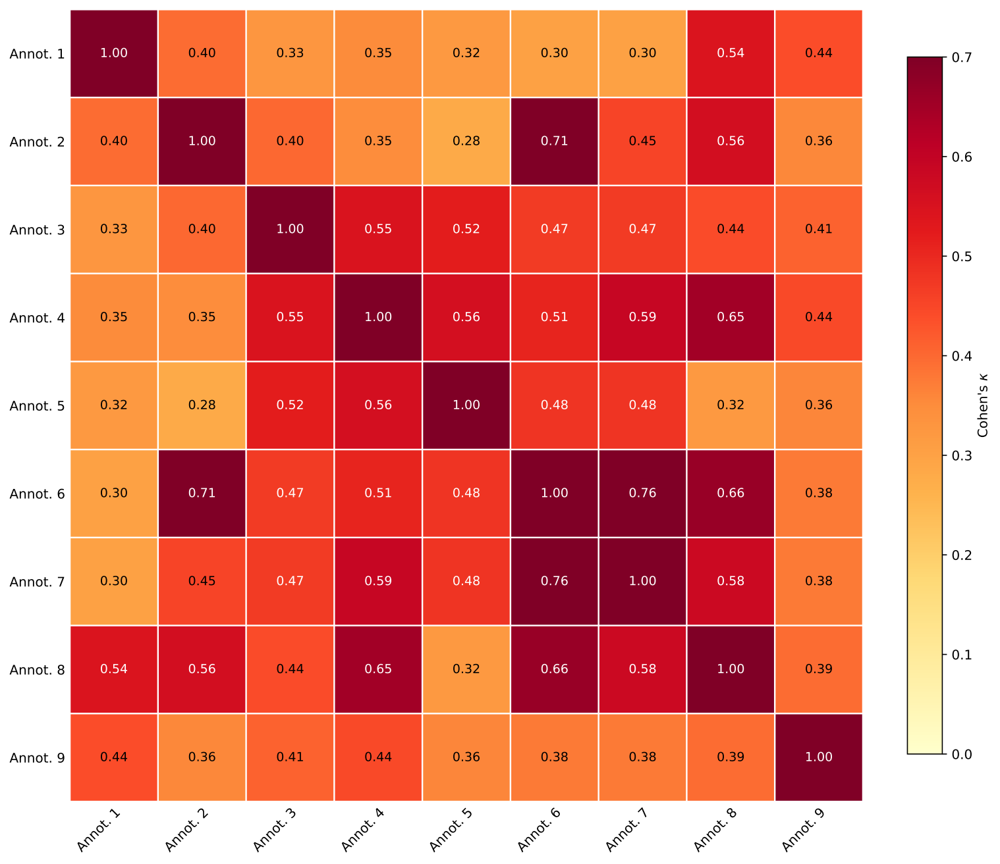
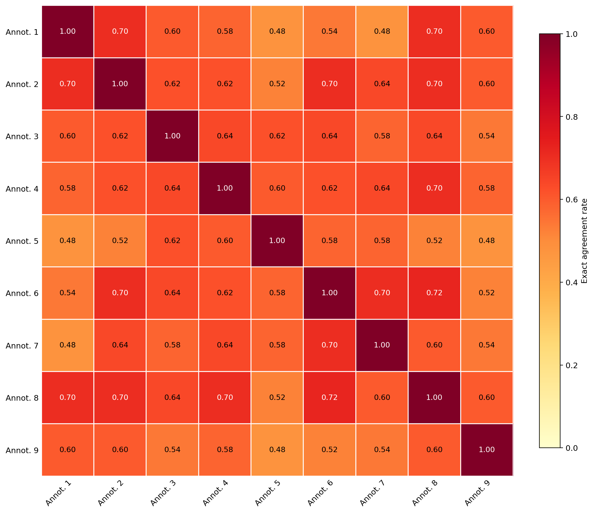
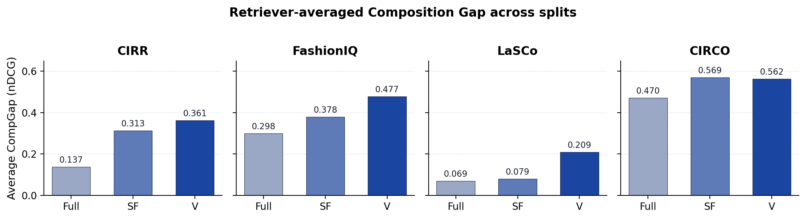

TL;DR. Composed Image Retrieval (CIR) should require both a reference image and a modification text. Across the four standard CIR benchmarks — CIRR, FashionIQ, LaSCo, CIRCO — we audit 11 retrievers (9 open-source + 2 commercial APIs) and find that a large share of test queries can be solved with only the image or only the text. CIRCUS releases the audit, the resulting shortcut-free subset (23 228 queries), and a human-validated subset (1 689 queries) that survived both filters — plus a normalised Composition Gap metric to quantify how much a retriever actually composes.
By the numbers
How CIRCUS works
- Encode each query three times for every retriever in the pool: with both modalities (the standard CIR setting), with only the text (image zeroed out), and with only the image (text dropped).
- Record the rank of the ground-truth target under each modality.
- Aggregate across the 11-retriever pool and assign each query one of four labels:
composition_required— at least one retriever solves it with both modalities; none solves it unimodally.unresolved— no retriever solves it under any modality.shortcut_solvable— at least one retriever solves it with only image or only text. Excluded.shortcut_free— the union ofcomposition_requiredandunresolved.
- Human validation: re-show the surviving queries to multiple annotators using the rubric below. Queries are kept only when a majority of annotators marked them as well-formed CIR.
Validity rubric (used during human validation)

VALIDATED, INVALID_TEXT_QUERY, INVALID_IMAGE_QUERY, INVALID_TARGET_IMAGE, QUERY_TOO_BROAD. The full rubric (severity ordering, decision flow, the ≥10-alternatives heuristic) is in annotations/annotation_instructions.md.
Inter-annotator agreement


The full write-up — including Krippendorff's α — is in annotations/agreement_report.md.
Shortcut audit (Table 1)
Per-benchmark split sizes after running the audit across all 11 retrievers at $K = 10$.
| Benchmark | Total | composition required | unresolved | shortcut-free | shortcut-solvable |
|---|---|---|---|---|---|
| CIRR | 4 170 | 271 | 414 | 685 | 3 485 |
| FashionIQ | 6 003 | 1 462 | 2 607 | 4 069 | 1 934 |
| LaSCo | 30 031 | 2 064 | 16 354 | 18 418 | 11 613 |
| CIRCO | 220 | 53 | 3 | 56 | 164 |
“shortcut-free” = composition_required ∪ unresolved.
Human-validated subset (Table 2)
For CIRR and CIRCO the full shortcut-free residue was audited; for FashionIQ and LaSCo a stratified sample of 1 000 + 1 000 was audited.
| Benchmark | audited (comp_req) | validated_solved | audited (unresolved) | validated_unsolved | total validated |
|---|---|---|---|---|---|
| CIRR | 271 | 147 | 414 | 156 | 303 |
| FashionIQ | 1 000 | 368 | 1 000 | 218 | 586 |
| LaSCo | 1 000 | 452 | 1 000 | 306 | 758 |
| CIRCO | 53 | 39 | 3 | 3 | 42 |
| Total | 2 324 | 1 006 | 2 417 | 683 | 1 689 |
The Composition Gap
Once the subsets are built, we need to ask: does a retriever actually use both modalities? Following the paper, we define the normalised Composition Gap:
where $\mathrm{MM}$, $I$, and $T$ are the full-catalogue nDCG of the same retriever under the multimodal, image-only, and text-only inputs.
$\mathrm{CompGap}$ measures the fraction of ranking quality that cannot be recovered from either unimodal input. Larger values mean the retriever genuinely needs both modalities; values close to zero mean one modality is enough.
We use a normalised gap because absolute nDCG varies a lot across splits — the shortcut-free and validated subsets are harder, so the absolute multimodal score drops. Normalising by $\mathrm{MM}$ makes a fair comparison possible. An MRR variant $\mathrm{CompGap}_{\mathrm{MRR}} = 1 - \max(I,T)/\mathrm{MM}_{\mathrm{MRR}}$ follows the same trends and is reported in the appendix.

| Benchmark | Full | Shortcut-free (SF) | Validated (V) | Full → V |
|---|---|---|---|---|
| CIRR | 0.137 | 0.313 | 0.361 | +0.224 |
| FashionIQ | 0.298 | 0.378 | 0.477 | +0.179 |
| LaSCo | 0.069 | 0.079 | 0.209 | +0.140 |
| CIRCO | 0.470 | 0.569 | 0.562 | +0.092 |
Recall@10 across the audited subsets
Recall@10 (%) on the original benchmark (Full), the shortcut-free subset (SF), and the validated subset (V). Image-only and text-only columns are omitted because, by construction, no unimodal configuration solves these queries within top-10. Best in column is bold, second-best underlined.
| Retriever | CIRR | FashionIQ | LaSCo | CIRCO | ||||||||
|---|---|---|---|---|---|---|---|---|---|---|---|---|
| Full | SF | V | Full | SF | V | Full | SF | V | Full | SF | V | |
| E5-Omni | 55.2 | 11.8 | 15.2 | 16.9 | 6.9 | 12.5 | 9.4 | 0.5 | 2.3 | 65.9 | 39.3 | 38.1 |
| GME-Qwen2VL | 64.4 | 16.1 | 20.4 | 31.1 | 14.7 | 23.8 | 13.2 | 1.9 | 11.2 | 85.9 | 69.6 | 66.7 |
| LamRA | 65.1 | 18.1 | 22.6 | 33.2 | 17.5 | 31.1 | 12.3 | 1.3 | 7.5 | 81.4 | 69.6 | 66.7 |
| LamRA-Qwen2.5VL | 65.2 | 15.2 | 19.8 | 31.9 | 16.3 | 29.7 | 12.8 | 1.3 | 7.0 | 84.5 | 67.9 | 64.3 |
| MM-Embed | 63.3 | 16.2 | 20.1 | 25.5 | 11.3 | 19.6 | 18.2 | 3.1 | 19.0 | 82.7 | 58.9 | 61.9 |
| Qwen3-VL-2B | 64.6 | 13.7 | 17.6 | 28.3 | 11.7 | 24.7 | 11.2 | 1.6 | 10.6 | 78.2 | 57.1 | 59.5 |
| Qwen3-VL-8B | 70.1 | 17.2 | 24.1 | 32.6 | 14.7 | 28.5 | 13.3 | 2.1 | 13.5 | 86.4 | 71.4 | 71.4 |
| Rzen-Embed | 70.1 | 17.4 | 22.3 | 30.8 | 14.9 | 26.2 | 12.8 | 1.7 | 10.7 | 86.4 | 71.4 | 66.7 |
| VLM2Vec-V2 | 55.0 | 11.1 | 15.2 | 15.8 | 5.4 | 9.2 | 9.1 | 1.3 | 7.9 | 38.6 | 19.6 | 23.8 |
| Gemini Emb. 2 | 49.2 | 11.8 | 15.2 | 24.9 | 11.5 | 18.7 | 12.4 | 2.1 | 10.4 | 74.1 | 62.5 | 61.9 |
| Voyage MM-3.5 | 54.4 | 10.2 | 14.2 | 19.4 | 7.4 | 14.7 | 14.8 | 1.8 | 10.4 | 77.7 | 51.8 | 52.4 |
Retriever pool
9 open-source + 2 commercial APIs:
- E5-Omni · GME-Qwen2VL · LamRA · LamRA-Qwen2.5VL · MM-Embed
- Qwen3-VL-Embedding (2B and 8B) · Rzen-Embed · VLM2Vec-V2
- Gemini Embedding 2 · Voyage Multimodal 3.5
Reproduce in five stages
- Envs — one conda env per retriever family (
envs/create_*.sh). - Per-(dataset, retriever) retrieval —
retrieval/run_generate_retrieval_data*.shwrites one JSON per pair with multimodal / text-only / image-only ranks. - Aggregate —
retrieval/aggregate_retrieval_data.pyturns ranks into the audit labels (already shipped undershortcut_audit/). - Validated subset —
final_dataset/build_validated_subsets.pyderivesfinal_dataset/query_jsonl/fromannotations/users/. - Re-evaluation —
subset_evaluation/run_subset_eval.shwrites Recall@10 (and the two ablations, when requested) per(dataset, subset, retriever)tosubset_evaluation/logs/results.jsonl.
Step-by-step instructions are in the repository README.
Citation
@inproceedings{circus,
title = {Do Composed Image Retrieval Benchmarks Require Multimodal Composition?},
author = {Attimonelli, Matteo and De Bellis, Alessandro and Gema, Aryo Pradipta and
Saxena, Rohit and Sekoyan, Monica and Kwan, Wai-Chung and Pomo, Claudio and
Suglia, Alessandro and Jannach, Dietmar and Di Noia, Tommaso and
Minervini, Pasquale},
year = {<year>},
note = {<venue / arXiv ID>},
}